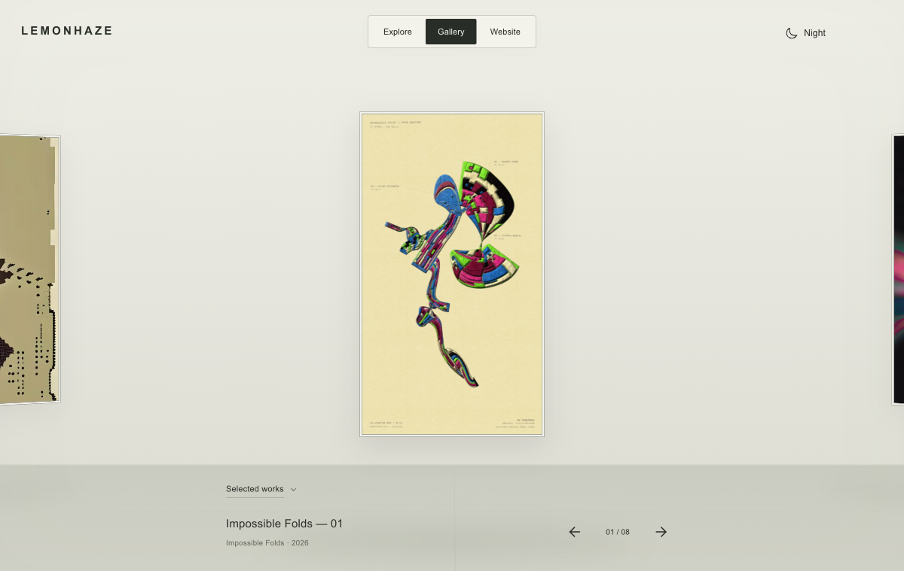
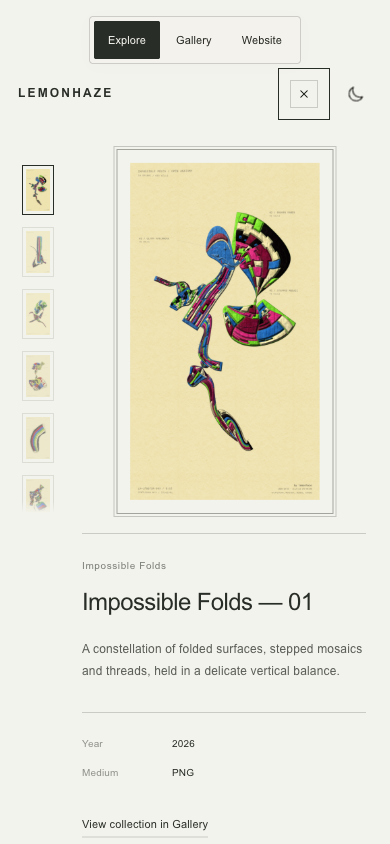

November 12, 2026 · Local review, not deployed.
The still-to-still focus pull now lasts 360ms. A mild 1.2px blur and 94% contrast resolve to full clarity after the temporary sharp layer takes over early in the animation. Live HTML/video playback is excluded. Native pixel originals and reduced motion use a direct decoded swap.

Slightly slower critically damped settling, centre-weighted soft shadows, and a 220ms collection reveal from 94% to full opacity. No new controls, scale changes, room redesign or Explore changes. Cancelled drags suppress delayed clicks while fresh pointer and keyboard intents remain usable.
The full build generated 1,704 pages and passed 250 tests. Browser checks covered arrow and keyboard navigation, collection changes, cancelled-pointer delayed clicks, keyboard activation afterwards, overlay alignment and cleanup, mobile detail, reduced motion and native 24px pixel art. Reduced motion produced zero overlays and zero animations; pixel art retained nearest-neighbour rendering. The earlier Griffintown fitting fix remains included.
